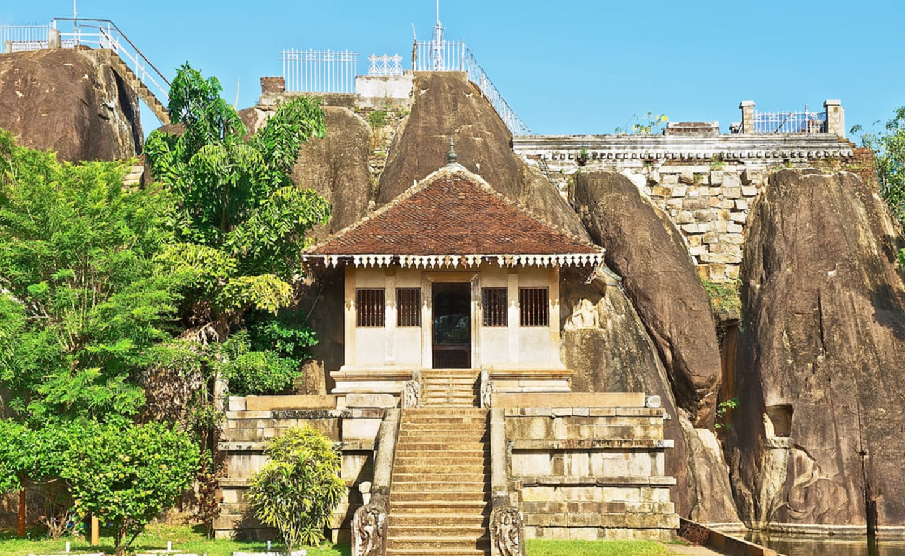
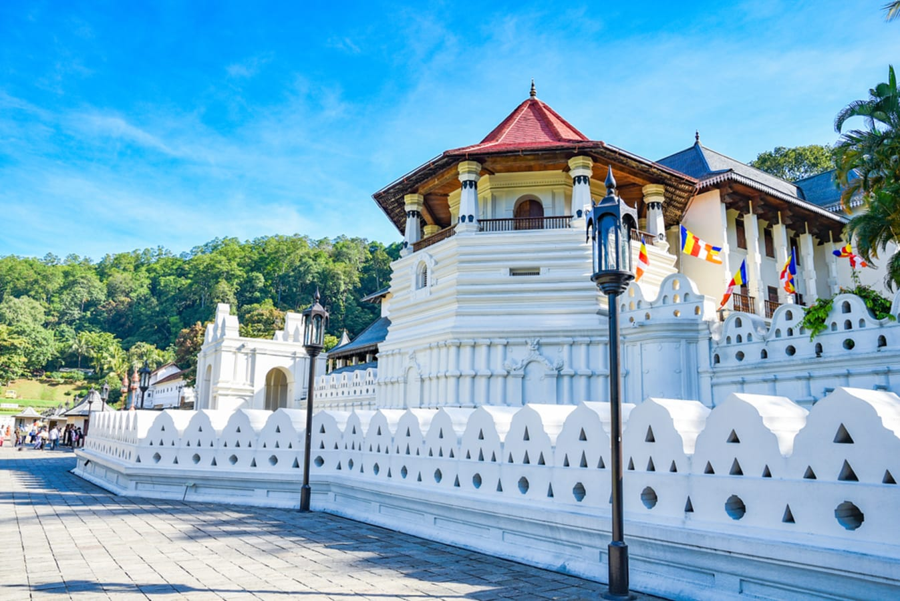
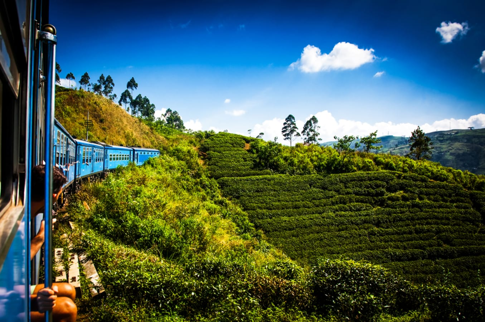
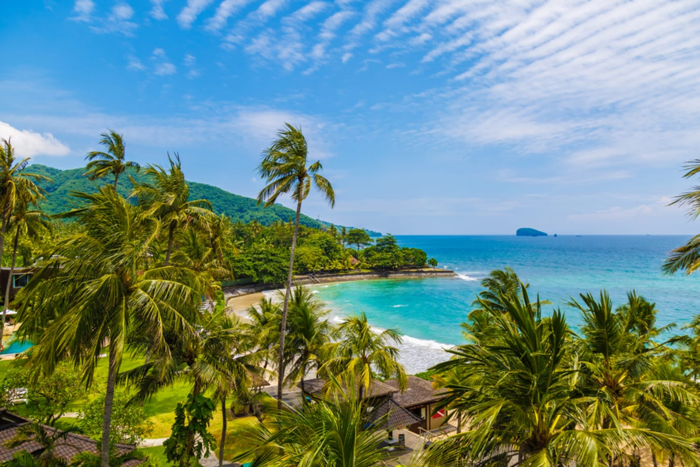
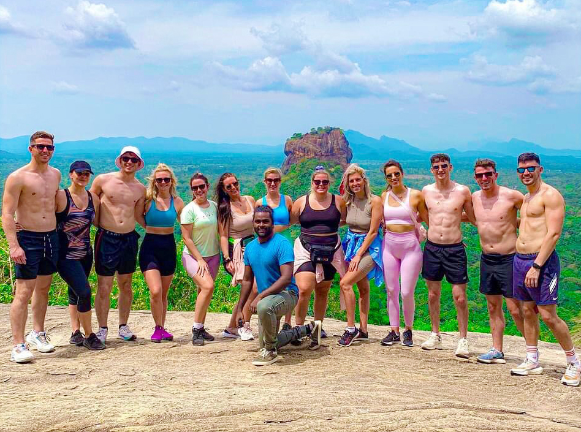
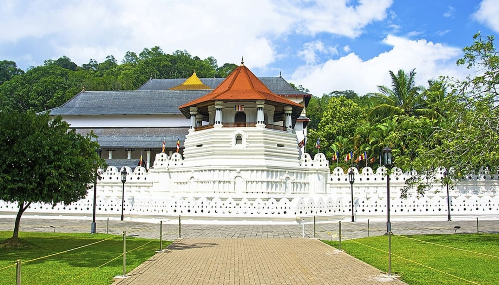

Seamless travel routes planned by duration and theme to maximize your discovery.
Select an itinerary matching your available holiday length.

Designed for travelers on a tight schedule or weekend transit, this 3-day itinerary combines the architectural heritage of colonial Galle Fort, golden Indian Ocean beaches, and cosmopolitan Colombo city highlights.
Arrive at CMB airport, drive to Colombo city centre. Tour the Gangaramaya Buddhist Temple on Beira Lake, explore British colonial architecture in Colombo Fort, and enjoy fresh spiced prawns (isso vade) at sunset along Galle Face Green promenade.
Overnight: ColomboTake the Southern Expressway south to Galle (2 hours). Spend the morning walking the ramparts of the 17th-century UNESCO World Heritage Galle Fort, browsing artisan boutiques on Church Street and visiting the Dutch Reformed Church. In the afternoon, swim in the calm turquoise bay of Unawatuna and watch the sunset from the Japanese Peace Pagoda.
Overnight: Galle or UnawatunaHead northward along the coastal road with a morning stop at Hikkaduwa or Kosgoda Turtle Hatchery. Stop by Independence Memorial Hall and Arcade Independence Square in Colombo for souvenir and Ceylon tea shopping before transferring to the airport for your evening flight.
Overnight: Departure
Take in Sri Lanka's greatest cultural wonders: climb the 5th-century Sigiriya Rock Fortress, marvel at the cave paintings of Dambulla, pay homage at Kandy's Temple of the Sacred Tooth Relic, and breathe crisp mountain air in Nuwara Eliya.
Drive from Colombo to Dambulla. Climb to the UNESCO World Heritage Royal Cave Temples, housing over 150 serene Buddha statues and 2,000 square meters of painted rock ceilings dating back to the 1st century BC. Check into your hotel in Habarana or Sigiriya.
Overnight: Sigiriya / HabaranaEarly morning climb of Sigiriya Rock Fortress to beat the heat, admiring the ancient water gardens, mirror wall, and 5th-century frescoes. In the late afternoon, hike up neighboring Pidurangala Rock for a panoramic 360-degree sunset view facing Sigiriya.
Overnight: SigiriyaDrive south to the royal capital of Kandy via Matale spice gardens. Visit the Temple of the Sacred Tooth Relic (Sri Dalada Maligawa) during the evening Thevava (offering ceremony). Stroll around serene Kandy Lake and watch a traditional Kandyan dance performance.
Overnight: KandyWalk among the giant Javan fig trees and orchid pavilion at Royal Botanical Gardens Peradeniya. Ascend into the central highlands through winding tea hills to 'Little England' (Nuwara Eliya). Tour Pedro Tea Estate to learn the art of Ceylon orthodox black tea processing.
Overnight: Nuwara EliyaMorning pony ride or leisurely stroll around Gregory Lake. Descend through the misty mountain passes, stopping at Ramboda Falls for a scenic lunch before heading to Colombo / CMB Airport for departure.
Overnight: Departure
The absolute benchmark 1-week route through Sri Lanka: the Cultural Triangle (Sigiriya & Dambulla), the hill kingdom of Kandy, the world-famous blue train through tea plantations to Ella, and the colonial fortress town of Galle.
Arrival at CMB airport. Transfer northeast to Dambulla Cave Temple to witness the monumental Buddhist rock sanctuaries. Check into a scenic eco-lodge in Sigiriya.
Overnight: SigiriyaDawn climb of King Kashyapa's 5th-century Sigiriya citadel. In the afternoon, embark on an open-top 4x4 safari in Minneriya National Park to witness hundreds of wild Asian elephants grazing around the historic reservoir.
Overnight: SigiriyaJourney south to Kandy. Explore Peradeniya Royal Botanical Gardens followed by an evening visit to the sacred Temple of the Tooth Relic during ceremonial drumming.
Overnight: KandyBoard the legendary blue train from Kandy/Nanu Oya to Ella, winding past cascading waterfalls, eucalyptus forests, and endless emerald tea estates. In the afternoon, hike to the iconic Nine Arch Bridge to watch the vintage train cross the viaduct.
Overnight: EllaMorning sunrise hike up Little Adam's Peak. Stop at the roaring Ravana Falls before descending the southern mountain pass towards Mirissa and Weligama on the Indian Ocean coast.
Overnight: Mirissa or WeligamaEarly morning blue whale excursion (seasonal) or sunrise photos at Coconut Tree Hill. Afternoon walking tour of UNESCO Galle Fort, visiting the maritime museum, ramparts, and lighthouse.
Overnight: GalleDrive up the southern coast to Colombo. Explore Pettah Floating Market or Dutch Hospital precinct for artisan gifts, followed by a final sunset tea before airport departure.
Overnight: Departure
Combining three UNESCO World Heritage ancient kingdoms (Anuradhapura, Polonnaruwa, Sigiriya), the sacred cloud forests of Horton Plains, the leopard-rich dry zone of Yala National Park, and the golden shores of the South Coast.
Relax after your international flight in the coastal town of Negombo. Watch traditional catamaran sailboats and visit the Dutch canal and busy fish markets.
Overnight: NegomboDrive north to ancient Anuradhapura. Pay homage at the Jaya Sri Maha Bodhi, the oldest historically authenticated living tree in the world, and marvel at the colossal white dome of Ruwanwelisaya stupa.
Overnight: AnuradhapuraClimb the ancient stone stairways of Mihintale, where Buddhism was first introduced to Sri Lanka in 247 BC. Proceed to Sigiriya for a sunset hike up Pidurangala Rock.
Overnight: SigiriyaEarly climb of Sigiriya Fortress. In the afternoon, bicycle through the ruins of Polonnaruwa: King Parakramabahu's Royal Palace and the breathtaking colossal rock-carved Buddhas of Gal Vihara.
Overnight: Sigiriya / HabaranaExplore the painted sanctuaries of Dambulla Cave Temple. Continue up into Kandy to visit the Temple of the Tooth Relic and attend an authentic cultural drumming performance.
Overnight: KandyStroll Peradeniya Gardens then drive or train past misty waterfalls to Nuwara Eliya. Sip high tea at the Grand Hotel and tour Pedro Tea Estate.
Overnight: Nuwara EliyaDawn trek across the windswept moorlands of Horton Plains National Park to the 880-meter vertical sheer drop at World's End and Baker's Falls. Transfer to Ella to watch the sunset at Nine Arch Bridge.
Overnight: EllaDescend towards the southern plains, stopping at Sri Lanka's second highest waterfall, Diyaluma. Afternoon leopard and sloth bear safari in Yala National Park.
Overnight: Yala or TissamaharamaDrive westward along the turquoise coastline. Spot stilt fishermen in Koggala and spend the afternoon and evening exploring the cobbled alleys, cafes, and ramparts of Galle Fort.
Overnight: GalleReturn to Colombo via the highway. Last-minute Ceylon spice and handicraft shopping at Laksala, stroll Galle Face Green, and transfer to airport for departure.
Overnight: Departure
A comprehensive 14-day discovery encompassing Wilpattu's wilderness, the sacred cities of Anuradhapura and Polonnaruwa, the central highlands of Kandy, Nuwara Eliya, and Ella, wildlife safaris in both Minneriya and Yala, and relaxation along the idyllic southern beaches.
Arrive at Bandaranaike International Airport and check into your coastal Negombo hotel. Take an afternoon boat safari through the Muthurajawela Marsh bird sanctuary.
Overnight: NegomboDrive north to Wilpattu, Sri Lanka's largest and oldest national park, famous for its natural sand-rimmed water basins (villus) and shy leopards.
Overnight: Wilpattu Border or AnuradhapuraFull day dedicated to exploring the ancient royal monasteries, colossal stupas of Jetavanaramaya and Ruwanwelisaya, and the sacred Jaya Sri Maha Bodhi.
Overnight: AnuradhapuraClimb Mihintale rock monastery in the morning. In late afternoon, climb the world-famous UNESCO Sigiriya Lion Rock fortress.
Overnight: SigiriyaCycle among the ancient stone palaces and Gal Vihara shrines of Polonnaruwa. Afternoon jeep safari in Minneriya to see large elephant herds.
Overnight: SigiriyaVisit Dambulla Golden Rock Temple. Drive to Kandy through spice plantations. Evening ceremony at the Temple of the Sacred Tooth Relic.
Overnight: KandyExplore the royal botanical gardens of Peradeniya, walk around Kandy Lake, and take an optional afternoon excursion towards the Knuckles foothills.
Overnight: KandyScenic drive into the central highlands past Ramboda Falls. Tour tea factories, walk Nuwara Eliya's colonial Victoria Park and boat on Gregory Lake.
Overnight: Nuwara EliyaEarly morning cloud forest hike at World's End. Catch the world-famous train to Ella and walk to the Nine Arch Bridge.
Overnight: EllaSunrise hike to Little Adam's Peak. Descend to the southern plains past Ravana Falls and arrive at Yala for evening wildlife briefing.
Overnight: YalaDawn game drive in Yala Block 1 for leopards, elephants, and sloth bears. Afternoon birdwatching at Bundala Ramsar wetland sanctuary.
Overnight: Yala / TissamaharamaDrive west along the palm-fringed coast. Swim at horseshoe-shaped Hiriketiya bay, watch surfers, and relax at Mirissa Beach for sunset seafood dinners.
Overnight: MirissaExplore the cobbled lanes of 400-year-old Galle Fort: Dutch hospital, maritime archaeology museum, lighthouse, and artisan jewelers.
Overnight: GalleReturn to Colombo. Tour Independence Square, Gangaramaya Temple, and enjoy street food at Galle Face Green before transfer to CMB Airport.
Overnight: Departure
The definitive expedition covering all 9 provinces: Western, North Western, Northern (Jaffna & Mannar), North Central, Eastern (Trincomalee & Arugam Bay), Central, Uva, Sabaragamuwa, and Southern. Unlocks the true geographical diversity of Sri Lanka.
Begin in the commercial capital. Explore Colombo's historic Fort district, Pettah markets, and Gangaramaya temple.
Overnight: ColomboTravel north through Puttalam district. Visit ancient Munneswaram Kovil and reach Kalpitiya peninsula for dolphin watching and kite surfing.
Overnight: KalpitiyaExplore Wilpattu, then cross the causeway to historic Mannar Island. Inspect the ancient Baobab tree and the ruins of Talaimannar Pier facing India.
Overnight: MannarCross the historic Elephant Pass isthmus into Jaffna peninsula. Walk Jaffna Dutch Fort and admire the restored Jaffna Public Library.
Overnight: JaffnaTake the morning naval ferry to Delft Island to see wild horses, coral walls, and baobabs. Evening pooja ceremony at Nallur Kandaswamy Kovil.
Overnight: JaffnaStand at Point Pedro, the northernmost point of Sri Lanka. Bathe at sacred Keerimalai Springs, then drive south to Anuradhapura.
Overnight: AnuradhapuraSpend the full day exploring the oldest historical capital: Ruwanwelisaya, Twin Ponds (Kuttam Pokuna), and the sacred Bodhi tree.
Overnight: AnuradhapuraVisit Mihintale cradle of Buddhism and hike into the strict nature reserve of Ritigala Forest Monastery.
Overnight: Sigiriya / HabaranaClimb Sigiriya fortress at dawn. Tour Polonnaruwa's Gal Vihara, Parakrama Samudraya, and Lotus Pond in the afternoon.
Overnight: SigiriyaDrive east to Trincomalee. Visit the clifftop Swami Rock Koneswaram Temple and relax on the white sands of Nilaveli Beach.
Overnight: Nilaveli / TrincomaleeSnorkel with blacktip reef sharks and sea turtles at Pigeon Island. Travel south along the east coast to the shallow bay of Pasikudah.
Overnight: PasikudahVisit Batticaloa Fort and the singing fish lagoon. Continue south to world-famous surf haven Arugam Bay.
Overnight: Arugam BayMorning surf session or beach relaxation. Climb the remote rock monastery of Kudumbigala overlooking the Yala East wilderness.
Overnight: Arugam BayAscend inland via Mahiyangana to Kandy. Visit Dambulla Caves along the route and attend the evening ceremony at Temple of the Tooth.
Overnight: KandyTrek through the misty cloud forests, pygmy trees, and cascading hidden waterfalls of the Knuckles Conservation Forest.
Overnight: Kandy / KnucklesDrive past tea plantations into Nuwara Eliya. Walk the colonial town and prepare for the highland plateau trek.
Overnight: Nuwara EliyaHike Horton Plains World's End at sunrise. Ride the scenic train to Ella in Uva Province and photograph the Nine Arch Bridge.
Overnight: EllaSwim at Diyaluma Falls upper pools. Safari in Udawalawe National Park to see hundreds of elephants, then explore Ratnapura gem mines.
Overnight: Ratnapura or UdawalaweGuided trek into the virgin primary tropical rainforest of Sinharaja, spotting endemic birds, purple-faced langurs, and rare flora.
Overnight: Sinharaja Eco-LodgeHead down to Mirissa and Coconut Tree Hill. Spend the afternoon strolling along the 17th-century ramparts of UNESCO Galle Fort.
Overnight: GalleScenic return drive along the western shoreline to Colombo. Final celebratory dinner and transfer to CMB airport for departure.
Overnight: DepartureFollow specialized thematic trails curated around history, surfing, highlands, and wilderness.
Walk in the footsteps of ancient Sinhalese monarchs across five UNESCO World Heritage sites: Anuradhapura, Polonnaruwa, Sigiriya, Dambulla, and Kandy.
From the cobblestone streets of Galle Fort to the surf breaks of Weligama and the laid-back bohemian vibe of Hiriketiya, this coastal trail captures the best of the southern shoreline.
Escape into the cool, emerald embrace of the central highlands. Ride the world's most scenic train, sip freshly brewed single-estate Ceylon tea, and gaze across sheer precipices into southern plains.
Sri Lanka possesses one of the highest densities of leopards and elephants in Asia. This dedicated wildlife expedition journeys through Wilpattu, Minneriya, Yala, Bundala, and Udawalawe.
Venture off the beaten track to discover the distinct food, ornate Hindu kovils, island ferries, and poignant historical landmarks of Jaffna, Mannar, and the northern peninsula.
While the southwest experiences monsoon, the eastern coast basks in brilliant sunshine. Discover the deep natural harbor and clifftop temples of Trincomalee, calm waters of Pasikudah, and legendary waves of Arugam Bay.
Ascend Sri Pada (Adam's Peak) through the night to witness the sacred sunrise shadow, and bathe in natural rock pools beneath roaring highland cascades like Diyaluma, Bambarakanda, and Ramboda.
A specialized architectural and archaeological route visiting Yapahuwa's dramatic staircase, the citadel of Panduwasnuwara, Sigiriya's sky palace, and the royal citadel of Polonnaruwa.